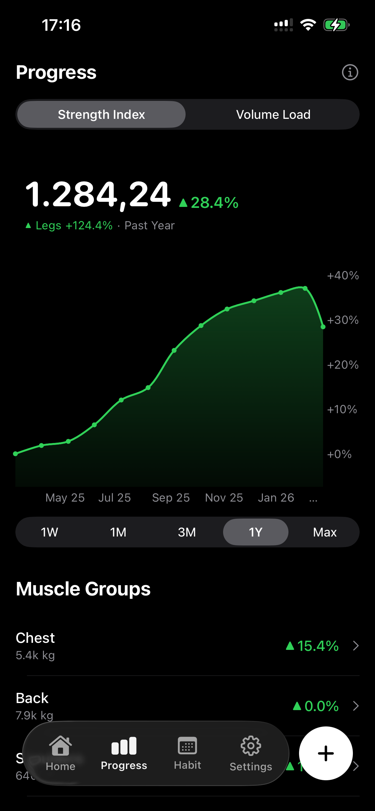

Fast in-session logging
Start a workout fast, reuse templates, and load your last working sets.
Fast workout logging with real strength progress
Vecta helps you log workouts fast, measure real progress, and stay consistent with the training that matters.
Core Benefits
Start a workout fast, reuse templates, and load your last working sets.
Track Strength Index, top weights, volume, and estimated 1RM in one place.
Keep momentum with streaks, calendars, badges, and full workout history.

Why Vecta
Most workout apps help you record sets. Vecta helps you understand your training. From quick workout logging to strength trends, overload tracking, bodyweight logs, and recovery-aware consistency tools, it gives you a clearer picture of what is improving and what needs attention.
Designed for fast, in-session logging with previous-set context, smart defaults, templates, and quick exercise selection.
Made for people who care about progression, overload, and measurable improvement instead of bloated tracking.
Turns consistency into something visible with streaks, history, badges, and calendar views.
Supports bodyweight lifts, machine work, custom exercises, backfilled sessions, and off days.
Feature Blocks
Start a session fast, pull in a template, compare against previous sets, and move through workouts with less friction.
Track Strength Index, volume load, top weights, estimated 1RM trends, and muscle-group progress from the same data you log.
Use streaks, calendars, badges, and training history to build momentum over time, including rest days and interrupted weeks.
Use built-in exercises, add your own, log bodyweight movements, track scale weight, scan machines, and backdate older sessions.